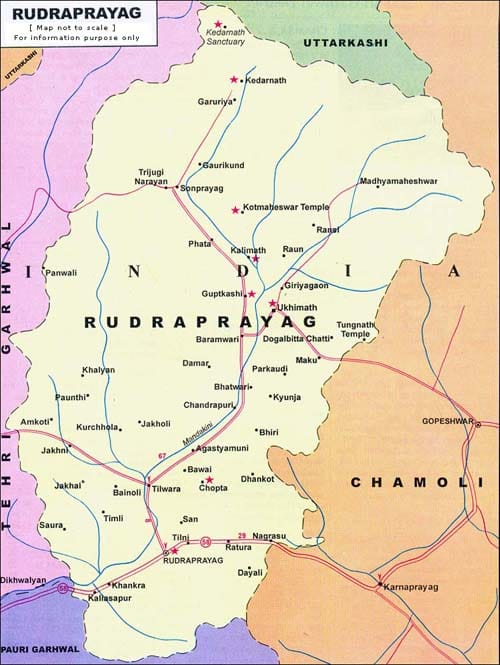

Mushrooms and Medicinal Plants – Rudraprayag

🍄 Product Description
Rudraprayag is renowned for its rich biodiversity, particularly its high-altitude mushrooms and an abundance of medicinal plants. These naturally growing resources are harvested sustainably by local communities and are used in traditional Ayurvedic treatments. The region's clean air, pure water, and unpolluted environment make it ideal for cultivating organic mushrooms like oyster, button, and medicinal fungi such as reishi and ganoderma. Alongside, the district is home to over 300 varieties of medicinal plants including kutki, atis, and jatamansi, which are used in herbal medicines, tonics, and treatments for a wide range of ailments. These products are increasingly being processed and packaged for national and international markets due to rising demand for alternative medicine and wellness solutions.
📍 Origin, Speciality & Cultural Significance
For centuries, the residents of Rudraprayag have had deep knowledge of local flora and have used plants for healing. The district's location in the Garhwal Himalayas provides a unique microclimate favorable for high-altitude medicinal herbs. Women and tribal communities play a significant role in identifying, collecting, and processing these plants. With the growing interest in Ayurveda and plant-based remedies, Rudraprayag’s contribution is now more relevant than ever. Forest-based livelihoods and eco-friendly farming practices make the district a center of organic wellness production.
📞 Contact & Purchase Info
For orders and collaborations, reach out to the Rudraprayag Herbal Producers Cooperative email at info@vedikuregroup.com. Visit their website at https://vedikuregroup.com/products/fermented-mushroom-blend or explore their stalls in local markets like Agastyamuni and Ukhimath.
🗺️ Rudraprayag District Map

🎉 Fun Facts & History
- Rudraprayag is named after Lord Shiva and is one of the Panch Prayag of the Alaknanda River.
- The forests here have been used for herbal remedies since ancient times.
- Traditional healers known as “Vaidyas” still use local herbs to treat common and complex diseases.
- The district is also emerging as a hotspot for mushroom farming and herbal agri-tourism.